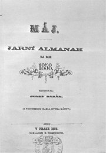

Máj, Jarní almanach na rok 1858
|
MÁJOVCI
Nová generace èeskıch spisovatelù vystoupila spoleènì almanachem Máj, proto tyto autory oznaèujeme jako druinu májovou nebo májovce.
Máj, Jarní almanach na rok 1858, uspoøádal Josef Barák a z nastupující generace umìlcù do nìj pøispìli Jan Neruda, Vítìzslav Hálek, Karolina Svìtlá, Adolf Heyduk, Rudolf Mayer nebo Sofie (ofie) Podlipská. Jejich snahy podpoøili i starší autoøi – Erben, Nìmcová a pod pseudonymem rovnì Friè a Sabina (Upomínka na K.H.Máchu). Díky úsilí Vítìzslava Hálka vycházel almanach Máj a do roku 1862, ale další roèníky u nebyly tak vıznamné.
Májovci se otevøenì hlásili k odkazu Karla Hynka Máchy, ale sami romantiky nebyli. Mnohem blíe mìli k realismu. Zajímali se o sociální problémy a ivot ve mìstì i na venkovì. Vıznamnou roli v jejich tvorbì hrálo vlastenectví, zároveò ale usilovali o svìtovost.
K májovcùm bıvají øazeni také další autoøi, kteøí do prvního almanachu Máj nepøispìli. Je to pøedevším Jakub Arbes, pøípadnì Václav Šolc, Gustav Pfleger Moravskı nebo Antal Stašek.
|

Domnìlı portrét K.H.Máchy otištìnı v almanachu Máj
|
Jan Neruda (1834-1891)
Neruda se narodil v Praze, kde také zemøel. Jeho otec získal jako vyslouilı voják trafiku v dnešní Nerudovì ulici (dùm U Dvou sluncù). Spisovatel maturoval na Akademickém gymnáziu, ale vysokou školu nedokonèil. Pùsobil jako uèitel èeštiny a pozdìji se stal novináøem (Hlas, Národní listy). Jeho láska k Annì Holinové a Karolínì Svìtlé nemìla dlouhého trvání a spisovatel zùstal a do konce ivota svobodnı. Neruda cestoval po Evropì a navštívil rovnì Turecko, Palestinu a Egypt. Aktivnì se úèastnil spolkového ivota (Umìlecká beseda, Vıbor pro vybudování Národního divadla, Spolek èeskıch urnalistù...).
Je autorem básnickıch sbírek Høbitovní kvítí, Knihy veršù, Písnì kosmické, Balady a romance a Prosté motivy. Posmrtnì vyšly Zpìvy páteèní, které uspoøádal J.Vrchlickı, a Epigramy.
Napsal sbírky povídek Arabesky (Byl darebákem!) a Povídky malostranské, prózu Trhani a cyklus Praské obrázky.
Neruda byl mistrem fejetonu (Studie krátké a kratší, erty, hravé i dravé) a cestopisnıch èrt (Rùzní lidé, Obrazy z ciziny). Psal rovnì dramata (enich z hladu, Francesca di Rimini), divadelní kritiky nebo teoretická pojednání (Škodlivé smìry, Moderní èlovìk a umìní).

Dùm U Dvou sluncù v Nerudovì ulici

Nerudovy Balady a romance
|
Jan Neruda: Povídky malostranské
K nejznámìjším prózám z Povídek malostranskıch patøí Tıden v tichém domì,
Pan Ryšánek a pan Schlegl,
Pøivedla ebráka na mizinu,
O mìkkém srdci paní Rusky,
Doktor Kazisvìt,
Hastrman,
Jak si nakouøil pan Vorel pìnovku,
U Tøí lilií nebo
Figurky. Povídky se odehrávají v prostøedí Malé Strany, které Neruda dobøe znal. Hlavními postavami jsou vìtšinou svébytné postavièky, které tuto praskou ètvr obıvaly. Èasto jde o podivíny, které nepøijala malomìšácká spoleènost. Její pomluvy se jim mnohdy staly osudnımi.
Nerudovy básnì
Nerudova poezie je velice rùznorodá. Jeho prvotina Høbitovní kvítí byla ovlivnìna romantismem a nesetkala se s kladnım pøijetím. Knihy veršù jsou nejrozsáhlejší sbírkou Jana Nerudy, tvoøí je tøi oddíly – Kniha veršù vıpravnıch, Kniha veršù lyrickıch a smíšenıch a Kniha veršù èasovıch a pøíleitıch. Písnì kosmické vnášejí do literatury nové námìty z oblasti vìdy a vesmírnı nadhled. Balady a romance tvoøí epické básnì. Poslední Nerudovou sbírkou jsou Prosté motivy. Verše z básníkovy pozùstalosti uspoøádal Jaroslav Vrchlickı do knihy Zpìvy páteèní.
Nerudovy fejetony
Neruda pracoval v Národních listech jako fejetonista. Nìkdy své podèarníky podepisoval trojúhelníèkem. Témata Nerudovıch fejetonù jsou znaènì rùznorodá. Vìtšinou šlo o zajímavé osobní postøehy z cest, kadodenního ivota, oficiálních událostí nebo autorova soukromí.
|
Proè byl pan Vorel neúspìšnı?
Kritizuje Neruda kuøáky? Co si myslíš o kouøení ty?
Pøevyprávìj alespoò tøi z Nerudovıch povídek.
Charakterizuj jednotlivé postavy Nerudovıch povídek.
Co je arabeska?

Která z Nerudovıch básní tì zaujala nejvíce? Proè? Pøeèti si celou sbírku, ze které tato báseò pochází.
Jakı je rozdíl mezi baladou a romancí? Respektuje Neruda slovníkové definice tìchto ánrù?
Èím je vıjimeèná básnická tvorba Jana Nerudy?
Jak rozumíš Šaldovì charakteristice Jana Nerudy „Mìl strašnou odvahu, e vzal slova z ulice, nemytá a neèesaná, jak je zastihl, a uèinil z nich posly vìènosti.“?
O èem pojednává fejeton Kam s ním?
Které další fejetony Jana Nerudy znáš?
Co je fejeton?
Které fejetonisty znáš?
Napiš vlastní fejeton.
|
Vítìzslav Hálek (1835-1874)
Hálkovım rodištìm byl Dolínek u Odoleny Vody, zemøel v Praze. Od gymnaziálních studií byl blízkım pøítelem Jana Nerudy. Pracoval jako domácí uèitel v rodinì zámoného advokáta a pozdìji si vzal svou aèku Dorotku Horáèkovou za manelku. Byl redaktorem Národních listù.
Hálek je autorem nìkolika byronskıch povídek a básnickıch sbírek Veèerní písnì, V pøírodì a Pohádky z naší vesnice. Napsal realistické povídky Na statku a v chaloupce, Na vejminku, Poldík rumaø nebo Muzikantská Liduška a historické drama Záviš z Falkenštejna. Jeho jedinı román Komediant se zabıvá tìkım postavením umìlce ve spoleènosti.
Hálkova kniha Na statku a v chaloupce
|
Hálkova poezie
Hálek byl ve své dobì velmi oblíbenım autorem. Pro jeho básnickou tvorbu je charakteristickı sklon k idealizaci. Hálkovy verše nejsou romanticky vypjaté, ale spíše umírnìné. Psal hlavnì milostné básnì – Veèerní písnì a pøírodní lyriku – V pøírodì. Zmìna nastala v jeho sbírce epickıch básní Pohádky z naší vesnice, kde se zamìøil také na negativní jevy èeského venkova.
Hálek ještì napsal øadu byronskıch povídek (Alfréd, Dìdicové Bílé hory...), ale tyto lyrickoepické básnì jsou pøíliš poplatné ustupujícímu romantismu.
Vítìzslav Hálek: Muzikantská Liduška
Hálkova povídka Muzikantská Liduška vypravuje pøíbìh tragické lásky mezi Liduškou a Toníkem. Rodièe chtìjí svou dceru provdat za statkáøe Krejzu, ale ta se sòatku brání a vnuceného enicha odmítne pøímo pøed oltáøem. Netuší, e Toník mezitím odjel pryè. Nešastná Liduška ho marnì hledá a nakonec se pomátne na rozumu.
|

Která z Hálkovıch básní se ti líbí nejvíce? Proè?
Na rozdíl od Nerudy byl Hálek uznáván jako vıznamnı spisovatel u bìhem svého ivota a jeho poezie byla velmi oblíbená. Èím mohl své souèasníky oslovit?
Pokus se srovnat tvorbu obou básníkù.
Proè se povídka jmenuje Muzikantská Liduška?
Charakterizuj vztahy mezi Liduškou, její matkou a otcem, Toníkem a Krejzou.
|
Karolína Svìtlá (1830-1899)
Johanna Rottová se provdala za svého domácího uèitele Petra Muáka. Pseudonym si zvolila podle jeho rodné vesnice (Svìtlá v Podještìdí). Spoleènì se svou mladší sestrou spisovatelkou Sofií Podlipskou organizovala hnutí za emancipaci en. Tìce ji poznamenala smrt jediné dcery. Dìj jejích povídek se vìtšinou odehrává na venkovì v oblasti Podještìdí – Kresby z Ještìdí. Toté mùeme øíci o jejích románech Køí u potoka, Vesnickı román, Kantùrèice, Frantina a Nemodlenec. Prózy První Èeška a Èernı Petøíèek se odehrávají v Praze. Historickı román Zvoneèková královna popisuje promìnu spoleènosti na pøelomu 18. a 19. stol. Zajímavé jsou autorèiny memoáry Upomínky a Z literárního soukromí.
Podle povídky Karolíny Svìtlé Hubièka napsala Eliška Krásnohorská libreto ke stejnojmenné opeøe Bedøicha Smetany.
|
Karolína Svìtlá: Køí u potoka
Dìj románu Køí u potoka se odehrává v Podještìdí. Mlynáøèina schovanka Evièka se vdá za Štìpána Potockého, na jeho rodì leí dávná kletba – kadé manelství skonèilo tragédií. Do Mikše Potockého se kdysi zamilovala Józa, ale kdy si vzal jinou, musela se spokojit s jeho bratrem Frantíkem, kterı jí dával omamnı nápoj. Nešastná Józa nakonec celı rod proklela a sama se zabila. Další potomek spáchal ze árlivosti bratrovradu. Neštìstí i kletbu pøipomíná køí u potoka. Evièka se rozhodne prokletí zlomit. Zdá se, e se jí to nemùe podaøit. Po narození dítìte se její mu zaèíná chovat hrubì, chodí èasto do hospody a najde si milenku. Štìpánùv bratr Ambro se navíc Evièce vyzná ze svıch citù. Ta ho sice také miluje, ale radìji Ambroe odmítne a jde prosit Štìpánovu milenku, aby nerozvracela jejich manelství. Její mu vše zaslechne a polepší se. Díky houevnatosti a sebeobìtování se tak Evièce podaøí kletbu zlomit.
|

Karolína Svìtlá
Co si myslíš o Evièce, Maøièce a Štìpánovi? Jak bys tento konflikt øešil/a ty?
Sehrajte tuto klíèovou scénu románu jako divadelní vıstup.
V 19. století byla ena ekonomicky závislá na manelovi. Jaké to mìlo dùsledky?
Co si myslíš o postavení eny v dnešní spoleènosti? Mají eny stejná práva jako mui?
|
Jakub Arbes (1840-1914)
Arbes pocházel z Prahy, kde také zemøel. Byl ákem Jana Nerudy. Pracoval jako odpovìdnı redaktor Národních listù, ale musel neustále èelit perzekuci a nakonec strávil skoro dva roky v èeskolipském vìzení. Po vıpovìdi z redakce se ocitl v existenèních nesnázích a musel se ivit jako volnı novináø a spisovatel.
Arbes proslul jako autor romanet (Ïábel na skøipci, Svatı Xaverius, Sivookı démon, Zázraèná Madona, Ukøiovaná, Newtonùv mozek nebo Poslední dnové lidstva) a próz se sociální tematikou (Moderní upíøi, Kandidáti existence, Štrajchpudlíci, Mesiáš nebo Andìl míru). Byl rovnì vıznamnım Máchovskım badatelem (rozluštil jeho šifrované deníky) a autorem medailonù øady svìtovıch umìlcù (Nesmrtelní pijáci, Záhadné povahy, Z duševní dílny básníkù).
Romaneto
Termín romaneto vymyslel Jan Neruda pøímo pro Arbesovy prózy, ve kterıch se mísily postupy románové (obšírné popisy, úvahy, líèení prostøedí a psychickıch stavù postav, prolínání dìjovıch pásem...) a novelistické (napínavı dìj, malı poèet postav, pøekvapivı závìr). Arbesova romaneta vìtšinou zaèínají domnìlou záhadou, která navozuje dojem pùsobení nadpøirozenıch sil, ale nakonec je vše racionálnì vysvìtleno.

|
Jakub Arbes: Svatı Xaverius
Vypravìè romaneta Svatı Xaverius se náhodnì setká s podivínem, kterı v malostranském chrámu sv. Mikuláše obkresluje obraz svatého Xaveria. Dozví se, e jeho babièka pracovala jako sluebná u malíøe Františka Xaveria Balka, kterı obraz namaloval a na smrtelném loi jí vyjevil, e obsahuje tajemné poselství, ze kterého by mohla vzejít spása pro miliony lidí. Její vnuk Xaverius se rozhodl toto tajemství rozluštit. Zjistí, e spojnice nìkolika bodù na obraze odpovídají praskım ulicím. Cesta vede od malíøova domu a k rokli, kde oba pøátelé vykopou rezavou krabici. Ne staèí zjistit, co je jejím obsahem, vzplane od svítilny tráva a Xaverius s nálezem uteèe a není k nalezení. Znovu se setkávají a po tøech letech ve vídeòském vìzení. Vypravìè se zde ocitne za své novinové èlánky, Xaverius kvùli obvinìní z krádee. Ne mu staèí novináø dosvìdèit alibi, Xaverius umírá. Nalezenı poklad obsahoval zajímavé, ale bezcenné minerály a polodrahokamy...
Jakub Arbes: Newtonùv mozek
Romaneto Newtonùv mozek bychom mohli oznaèit za první èeské sci-fi. Hlavní hrdina toti cestuje èasem pomocí dùmyslného pøístroje, kterı letí vesmírem rychlostí svìtla. Zpìtnì tak mùe pozorovat vıvoj lidstva a k jeho poèátkùm.
Další májovci a jejich díla
Sofie Podlipská: Peregrinus
Adolf Heyduk: Cimbál a husle
Rudolf Mayer: Básnì
Václav Šolc: Prvosenky
Gustav Pfleger Moravskı: Paní fabrikantová
|

Jakub Arbes

Svatı Xaverius z chrámu sv. Mikuláše
Co vidí hlavní hrdina pøi cestování èasem?
Jaké racionální vysvìtlení vymyslel Jakub Arbes pro cestování v èase?
Proè nese romaneto název Newtonùv mozek?
Arbes byl nadšenım ètenáøem E.A.Poea a E.T.A.Hoffmanna. Srovnej tvorbu tìchto tøí autorù.
|
Internetové stránky
Neruda: Balady a romance, Zpìvy páteèní
Nerudovy básnì
Nerudovy fejetony
Neruda: Povídky malostranské
Heyduk: Cigánské melodie
Exkurze
Nerudova ulice, virtuální prohlídka
Nerudova ulice, informace
Akademické gymnázium, Štìpánská ulice, Praha
Filmy
Tıden v tichém domì, reie J.Krejèík
(zfilmovány byly také další povídky Jana Nerudy i ivotní osudy tohoto spisovatele)
Muzikantská Liduška, reie M.Friè
Køí u potoka
Romaneto, reie J.Soukup
|
Doporuèená èetba
Arbes, Jakub: Romaneta, Èeskoslovenskı spisovatel, Praha 1975 (Svatı Xaverius, Ukøiovaná, Newtonùv mozek)
Arbes, Jakub: Z duševní dílny básníkù, Odeon, Praha 1977
Budín, Stanislav: Jan Neruda a jeho doba, SNKLHU, Praha 1960
Dílo Jakuba Arbese (35 svazkù), Melantrich, Praha 1960
Dub, Ota: Karolína Svìtlá, Severoèeské nakladatelství, Ústí nad Labem 1975
Hálek, Vítìzslav: Povídky, Odeon, Praha 1968
Haman, Aleš: Jan Neruda, Praha 1984
Hartl, Oldøich: Rudolf Mayer, Melantrich, Praha 1978
Heyduk, Adolf: Cigánské melodie a jiné písnì, SNKLHU, Praha 1955
Janáèková, Jaroslava: Jakub Arbes novináø, Novináø, Praha 1987
Krejèí, Karel: Jakub Arbes, ivot a dílo, Josef Lukašík, Praha 1946
Krejèí, K.: Kapitoly o Jakubu Arbesovi, Èeskoslovenskı spisovatel, Praha 1955
Køivánek, Vladimír: Jan Neruda, Horizont, Praha 1983
Moravec, Jakub: Jakub Arbes, Svobodné slovo, Praha 1966
Neruda, Jan: Básnì, Èeskoslovenskı spisovatel, Praha 1956
Neruda, J.: Obrazy ze ivota, Èeskoslovenskı spisovatel, Praha 1981
Neruda, J.: Obrázky z domova i ciziny, Èeskoslovenskı spisovatel, Praha 1983
Spisy Jana Nerudy (40 svazkù), SNKLU
Svìtlá, Karolína: Køí u potoka, Odeon, Praha 1968
Svìtlá, K.: Povídky z Podještìdí, SNDK, Praha 1955
Špièák, Josef: Ètení o Janu Nerudovi, Melantrich, Praha 1985
Špièák, J.: Karolina Svìtlá, Melantrich, Praha 1980
Vybrané spisy Vítìzslava Hálka (6 svazkù), SNKLHU
eò z díla Vítìzslava Hálka, Rebecovo nakladatelství, Praha 1942
ivot Jana Nerudy (3 svazky), usp. M.Novotnı, Èeskoslovenskı spisovatel
|
Vypracuj písemnı referát o nìkteré z uvedenıch knih.
Neorenesanèní dùm U Rotta v Praze
Národní listy
|
|